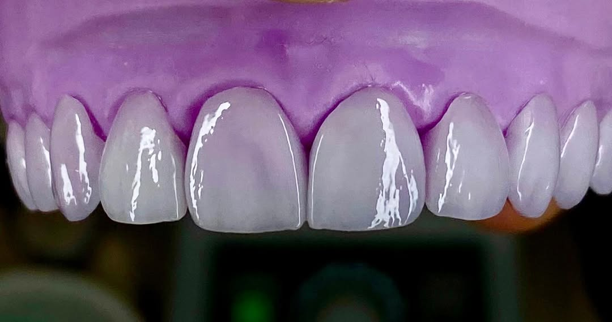
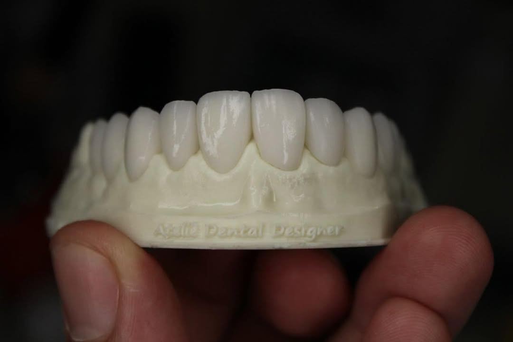
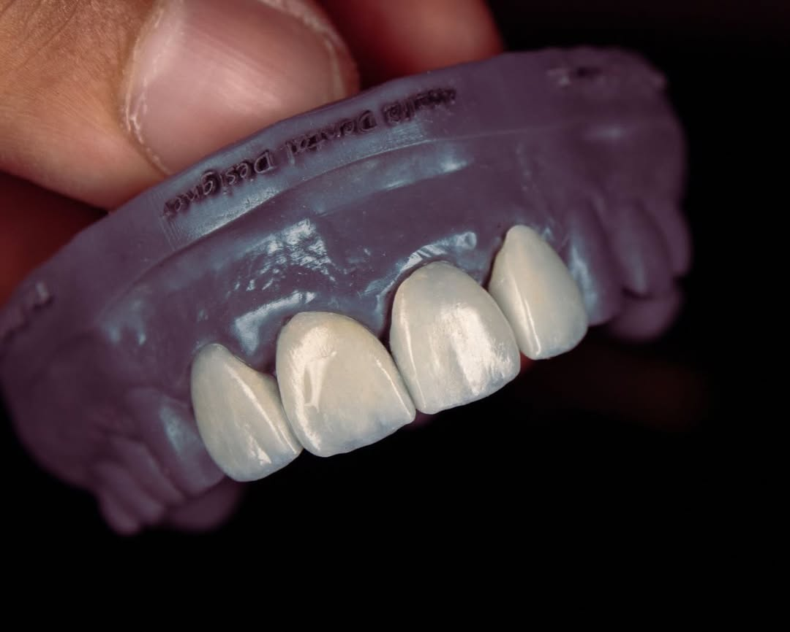
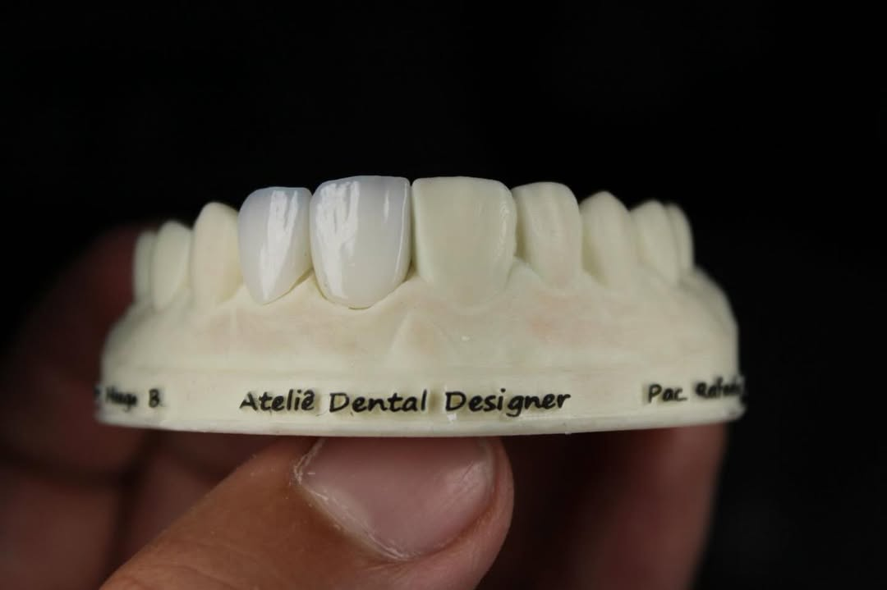

Unimos o trabalho artesanal minucioso à tecnologia de ponta (E.max, Zircônia e Fluxo Digital 3D) para criar sorrisos que se confundem com a natureza.


No Ateliê Dental Designer, acreditamos que a naturalidade não está apenas na cor, mas nos detalhes da anatomia, na translucidez e na perfeita integração com a saúde periodontal.
Nosso laboratório opera com fluxo 100% digital e impressão 3D para garantir precisão milimétrica, além do acabamento artesanal feito à mão para entregar a estética que o seu paciente merece.
Escaneamento intraoral, planejamento virtual e fresagem. O encontro perfeito entre a previsibilidade digital e o acabamento analógico.
Trabalhamos exclusivamente com Zircônia de alta translucidez e Dissilicato de Lítio (E.max) para máxima resistência e beleza.
Logística especializada, embalagens de proteção e rastreamento. Atendemos dentistas e clínicas no Brasil e fora do país.
Resultados reais que unem a naturalidade que o paciente deseja com a precisão que a odontologia exige.

Reabilitação Estética

Lentes de Contato em E.max
Entre em contato agora mesmo e descubra como o nosso fluxo digital pode transformar a entrega para os seus pacientes.
Chamar no WhatsApp